Cúp Nhà Vua (King's Cup)
Giải đua xếp hạng theo nhóm: thắng level để thu cúp, TOP 10 khi giải kết thúc nhận thưởng booster và Unlimited Lives.
Mô tả
- King's Cup là giải đua xếp hạng theo nhóm: người chơi thu cúp (trophy) khi thắng level và cạnh tranh thứ hạng với những người chơi khác trong cùng nhóm.
- Sự kiện mở khóa ở level 25 — mốc mở sớm nhất trong nhóm sự kiện này — và chỉ hiện icon khi server đang có giải, có groupId hợp lệ và giải chưa hết giờ.
- Ngay khi được ghép vào giải, người chơi nhận quà chào mừng 30 phút Unlimited Lives để có đủ lượt chơi đua cúp.
- Mỗi lần thắng level trong thời gian giải, số cúp được cộng vào điểm và thứ hạng tạm được tính lại ngay trên máy để hiển thị tức thì.
- Người chơi có thể bật hệ số nhân trước level để thu được nhiều cúp hơn cho mỗi lần thắng, leo hạng nhanh hơn.
- Bảng xếp hạng nhóm mở từ icon ở Home, hiển thị thứ tự, tên người chơi và đánh dấu dòng của chính mình.
- Khi hết giờ, client xin bảng xếp hạng chốt từ server rồi mở dialog kết quả; chỉ TOP 10 mới có phần thưởng.
- Phần thưởng theo hạng được viết cứng trong client (không có file config), giảm dần từ hạng 1 tới hạng 10 và có nhiều nhánh AB test cắt bớt booster.
- Người chơi ngoài TOP 10 có thể được xem bảng chốt (ShouldSeeNotRewardedFinalList quyết định) và client vẫn gửi lệnh claim rỗng để server biết giải đã kết thúc, nhờ đó giải mới có thể bắt đầu.
Lưu ý
Ảnh chụp màn hình (11)
Chụp trực tiếp từ game đang chạy: 2026-10-06 · LDPlayer 9 · Android 9 · 1080×1920 · Royal Match v38174 · tài khoản test 2712389101 (tên sdasfdfsdf), level 11. Bấm ảnh để phóng to, dùng phím ← → để chuyển ảnh.

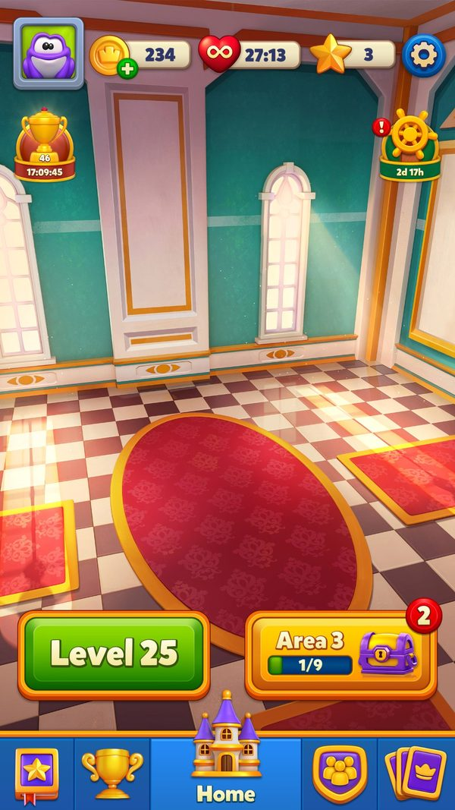

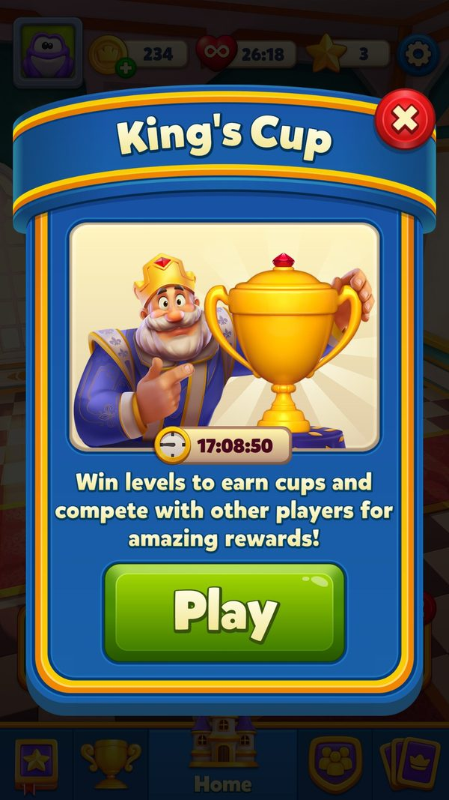

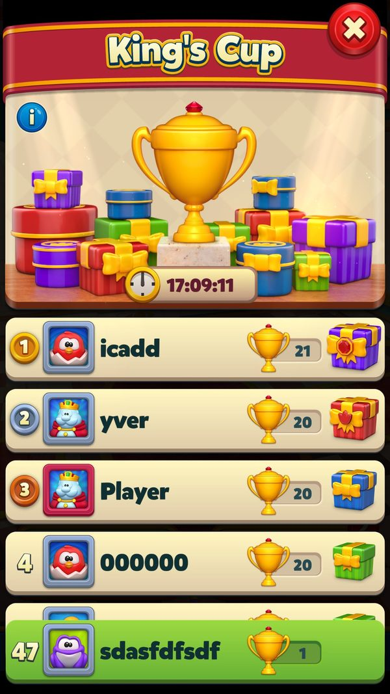

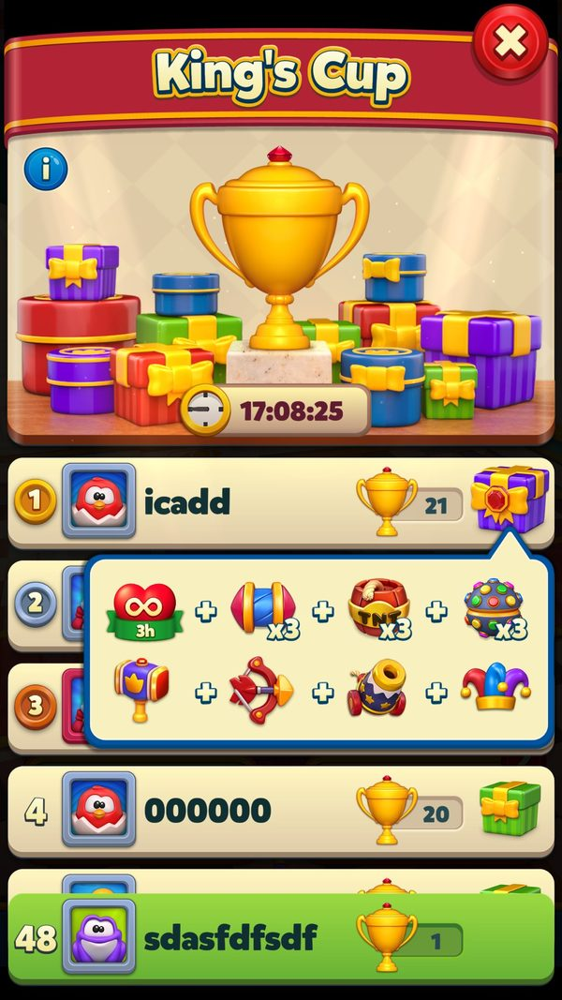

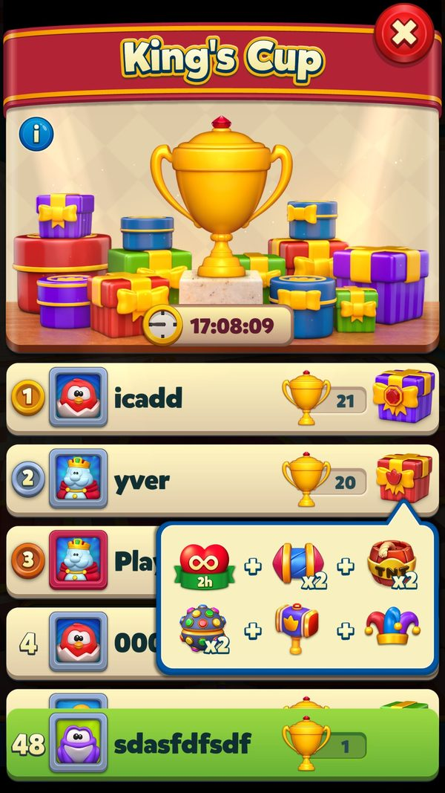

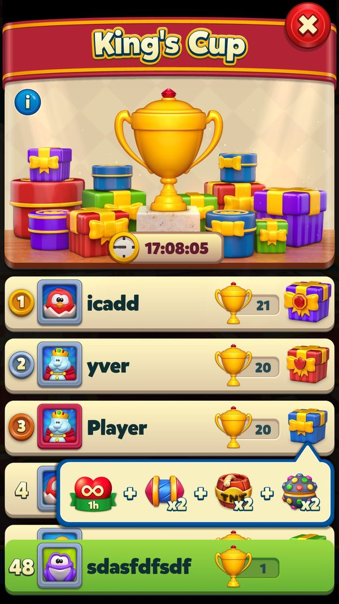

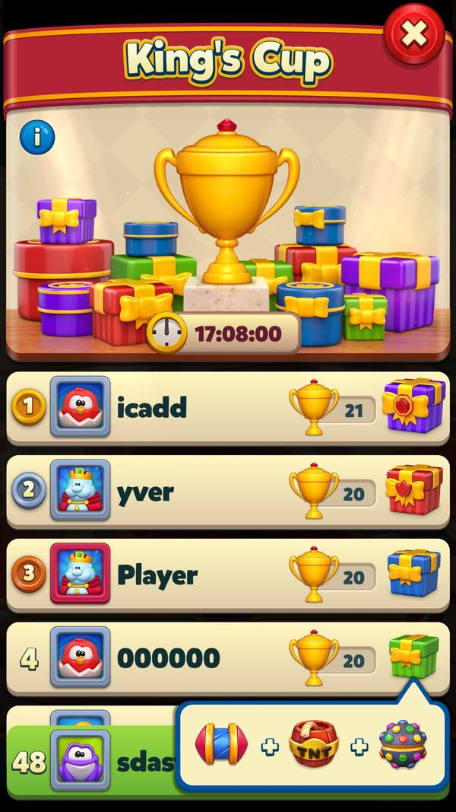

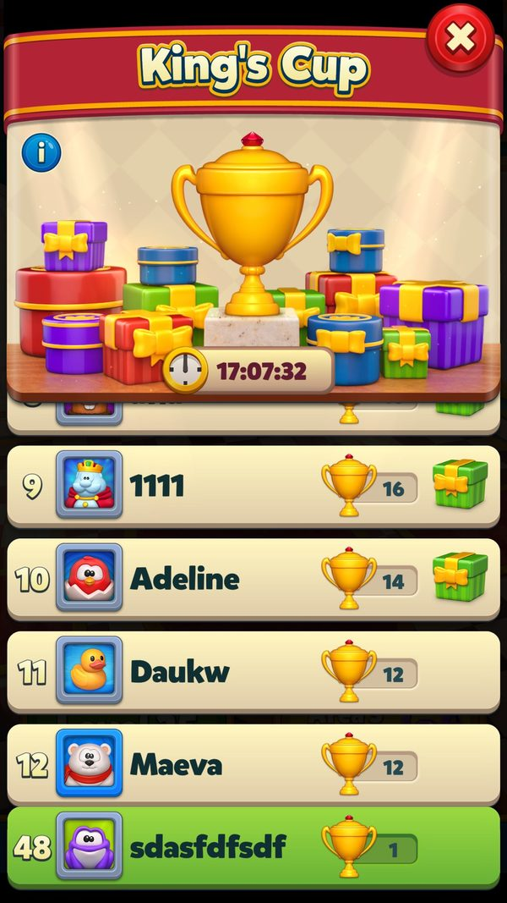

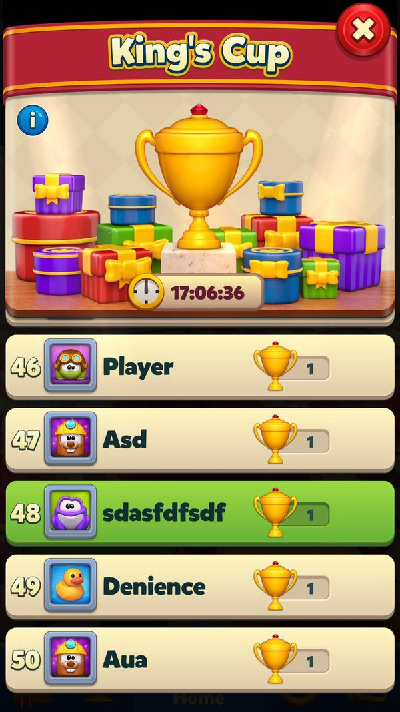

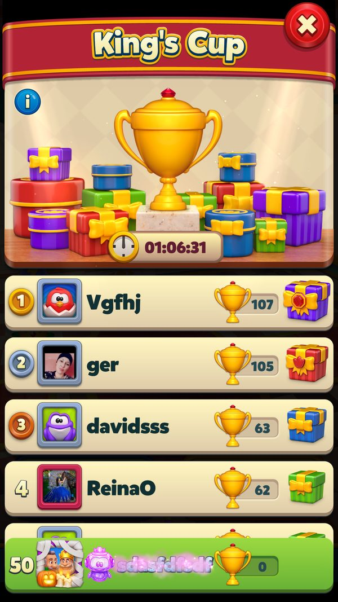

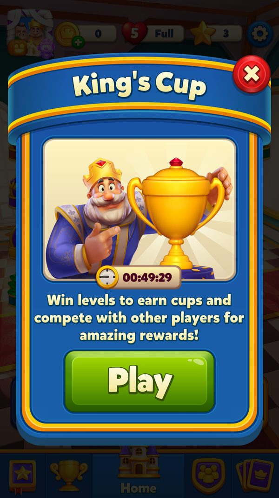
Mở khóa & điểm vào
KingsCupManager.UnlockLevel = 25 (const); get_HasEnoughLevel kiểm tra level. get_ShouldShowIcon() và get_CanJoinEvent() còn kiểm tra endDate, groupId và !IsRemainingTimeFinished. IsAllBundlesDownloaded() và GetBundleAvailableLevel() điều khiển tải bundle. CanShowEventIconLocked cho phép hiện icon khoá sớm.
Điểm vào:
- Icon King's Cup ở Home (KingsCupIcon.SetIconState)
- Dialog danh sách xếp hạng (tryShowKingsCupListPopupCoroutine)
- Start/info dialog tự động (TryAddStartDialog log 'Push info dialog by {0}')
- Dialog nhận thưởng (TryAddClaimDialog log 'Push claim popup to flow by {0}')
- Tooltip khi event bắt đầu (ShouldShowEventStartTooltip)
- Deeplink 'kingscup'
- Task 'Collect Cup' trong Mission events (KingsCupCollectCupTask)
Cách hoạt động
- Người chơi đạt level 25 (UnlockLevel = 25); get_HasEnoughLevel trả true và client bắt đầu tải bundle của sự kiện (IsAllBundlesDownloaded, GetBundleAvailableLevel).
- Server gửi KingsCupInfo trong gói refresh; UpdateInfo cập nhật endDate, rank, groupId và ghi danh sách người chơi vào bảng Leader (Type = 7) qua UpdateMembers.
- Client giải mã kcId từ groupId ở bit 48..63 và lưu dữ liệu cục bộ vào key "KingsCup" (chuỗi phân tách "§") qua UpdateKingsCupData.
- Khi phát hiện vừa vào giải (isEnteredEventNow), client tặng Unlimited Lives theo EventStartedRewardLivesMins — mặc định GiftedUnlimitedLifeTimeMinutes = 30 phút (hoặc giá trị server) — và log "GiveUnlimitedLifeReward", đồng thời bắn KcEnter(kcId, groupId, unlimitedLivesMin).
- Icon King's Cup hiện ở Home với điểm cúp, hạng và đếm ngược (KingsCupIcon.SetIconState); tooltip chào mừng bật khi ShouldShowEventStartTooltip trả true.
- Dialog giới thiệu tự bật tối đa 1 lần mỗi giải (StartDialogMaxShowCount = 1, TryAddStartDialog), trạng thái ghi vào key "KingsCupShowed".
- Trước level, người chơi có thể bật hệ số nhân cúp (CanMultiply, prefab "MultiplierTagCupIcon"); số cúp nhận được tính qua EventsHelper.GetCollectableCountWithMultiplier.
- Thắng level: CanEarnCups() kiểm tra shouldConsume, ShouldShowIcon và còn hơn 100 ms trước endDate, rồi AnimationData.AddKingsCup cộng cúp và UpdateRankLocally() cập nhật hạng tạm.
- Người chơi mở bảng xếp hạng nhóm bất cứ lúc nào (tryShowKingsCupListPopupCoroutine); danh sách kèm profile chỉ được làm mới sau mỗi 2 giờ (ShouldGetPlayersWithProfileThreshold = 7.200.000 ms).
- Một giờ cuối của giải được đánh dấu bằng hằng số LastHours = 3.600.000 ms (1 giờ trước endDate).
- Hết giờ (get_IsRemainingTimeFinished): client gọi GetFinishedEventDataFromBackend để lấy bảng chốt và HasFinishedEventData() xác nhận đã có dữ liệu cuối.
- Client gửi analytics kết thúc đúng một lần: SendFinishAnalyticsEvent() → KcFinish(kcId, groupId, rank, trophy, package), rồi SetDidSendFinishEvent().
- Nếu hạng ≤ 10 (WillGetReward): ClaimKingsCup() lấy bảng thưởng từ GetKingsCupRewards(rank), cộng vào kho qua InventoryPackage.GetKingsCupPackage với nguồn "KC-{rank}", ghi groupId vào key "KCCNF" rồi gửi ClaimKingsCupHttpCommand(groupId); nếu rank = 1 thì gọi thêm UserStatsHelper.OnKingsCupWin; status = 2 và JustClaimed = true.
- Server trả ClaimKingsCupRewardResponse: client đọc trophy = UserLeaderboard.GetMyScore(7), bắn KcClaim(kcId, groupId, rank, trophy, package), gọi ClaimSessionCompleted(), xóa key "KCCNF" và reset BeforeAfterData.
- Nếu hạng > 10: TrySendClaimForNoReward() gửi lệnh claim rỗng để chốt giải, ShouldSeeNotRewardedFinalList() cho xem bảng chốt (SetDidSeeFinalList), sau đó ResetAutoDialogState() dọn trạng thái để giải mới bắt đầu.
Luồng chi tiết theo code
FillFromLocal() log 'FillLocal - r:{0} g:{1} e:{2} eId:{3} seId:{4}' đọc key 'KingsCup' (chuỗi phân tách '§') và 'KCCNF' (claim chưa nhận phản hồi). Server gửi KingsCupInfo → UpdateInfo(info, LeaderboardInfoType) log 'Update Info - s:{0} e:{1} unl:{2} ce:{3} g:{4} ds:{5}'; nếu vừa claim thì log 'KingsCup is just claimed, will not update info. groupId: {0} '. UpdateInfo còn: UpdateEndDate(newEndDate), UpdateMembers(info, infoType) ghi bảng Leader, cập nhật rank/groupId (groupId mã hoá eventId ở bit 48..63 — ExtractKingsCupIdFromGroupId), tặng Unlimited Lives khi vào event (log 'GiveUnlimitedLifeReward:{0}', EventStartedRewardLivesMins, mặc định GiftedUnlimitedLifeTimeMinutes = 30), AnimationData.AddKingsCup cho hiệu ứng, TryClaimPreviousEvent() (log 'Send silent claim command for previous event: {0}'), TrySendClaimForNoReward() nếu không có thưởng, SendFinishAnalyticsEvent() + SetDidSendFinishEvent() (log 'Kings cup finish analytics event sent'). Trong level: CanEarnCups() = shouldConsume && ShouldShowIcon && còn > 100 ms; cúp thu được cộng vào điểm và UpdateRankLocally() cập nhật hạng tạm. Kết thúc: HasFinishedEventData() kiểm tra dữ liệu chốt; GetFinishedEventDataFromBackend(backendHttpService) lấy bảng cuối; get_CanClaimEvent / IsEventReadyForClaim / WillGetReward / ShouldSeeNotRewardedFinalList quyết định luồng. ClaimKingsCup(): GetKingsCupRewards(rank) → InventoryPackage.GetKingsCupPackage → UserManager.AddInventoryPackage với source 'KC-{rank}'; lưu claimedButResponseNotReceivedGroupId vào key 'KCCNF' để chống mất thưởng; gửi ClaimKingsCupHttpCommand(groupId); nếu rank == 1 → UserStatsHelper.OnKingsCupWin; status = 2, JustClaimed = true, KingsCupIcon.SetIconState. ClaimKingsCupResponseReceived(response): lấy trophy = UserLeaderboard.GetMyScore(7), gửi AnalyticsManager.KcClaim(kcId, groupId, rank, trophy, package), ClaimSessionCompleted() (log 'Claim session completed!'), xoá key 'KCCNF', BeforeAfterData.FullReset. ClaimNotFinished(claimGroupId) ghi 'KCCNF' khi chưa có phản hồi.
Phần thưởng
PHẦN THƯỞNG THEO HẠNG (NHÁNH MẶC ĐỊNH)
| Mốc/Rương/Hạng | Điều kiện | Phần thưởng |
|---|---|---|
| Hạng 1 | Đứng nhất nhóm khi giải kết thúc |  ∞180 phútUnlimited Lives ∞180 phútUnlimited Lives  3Rocket 3Rocket  3TNT 3TNT  3Light Ball 3Light Ball  1Royal Hammer 1Royal Hammer  1Cannon 1Cannon  1Jester Hat 1Jester Hat |
| Hạng 2 | Về nhì | ∞120 phútUnlimited Lives 2Rocket 2TNT 2Light Ball 1Royal Hammer 1Jester Hat |
| Hạng 3 | Về ba | ∞60 phútUnlimited Lives 2Rocket 2TNT 2Light Ball |
| Hạng 4 | Trong TOP 10 | 1Rocket 1TNT 1Light Ball |
| Hạng 5 | Trong TOP 10 | 1Rocket 1TNT 1Light Ball |
| Hạng 6 | Trong TOP 10 | 1Rocket 1TNT 1Light Ball |
| Hạng 7 | Trong TOP 10 | 1Rocket 1TNT 1Light Ball |
| Hạng 8 | Trong TOP 10 | 1Rocket 1TNT 1Light Ball |
| Hạng 9 | Trong TOP 10 | 1Rocket 1TNT 1Light Ball |
| Hạng 10 | Hạng thấp nhất còn thưởng (MinRewardedRank = 10) | 1Rocket 1TNT 1Light Ball |
| Hạng 11 trở đi | Ngoài TOP 10 (rank − 1 > 9) | Không có phần thưởng |
PHẦN THƯỞNG NHÁNH AB GIẢM BOOSTER
| Mốc/Rương/Hạng | Điều kiện | Phần thưởng |
|---|---|---|
| Hạng 1 — nhóm AB 2, 4 | Bitmask 0x14 trong GetKingsCupRewards | ∞180 phútUnlimited Lives 1Rocket 1TNT |
| Hạng 1 — nhóm AB 3, 5, 6 | Bitmask 0x68 trong GetKingsCupRewards | ∞180 phútUnlimited Lives 1Rocket 1TNT 1Light Ball ∞10 phútUnlimited Hammer (RewardType 0x2D) ∞10 phútUnlimited Jester (RewardType 0x30) |
| Hạng 1 — nhóm ngoài dải 2..6 | Nhánh mặc định | ∞180 phútUnlimited Lives 3Rocket 3TNT 3Light Ball 1Royal Hammer 1Cannon 1Jester Hat |
| Hạng 2..10 — nhóm AB 2..6 | Bảng rút gọn, chỉ giải mã được một phần từ pseudo-C | Ít booster hơn nhánh mặc định (suy luận) |
QUÀ THAM GIA & GHI ĐÈ SERVER
| Mốc/Rương/Hạng | Điều kiện | Phần thưởng |
|---|---|---|
| Quà vào giải | isEnteredEventNow — lần đầu được ghép vào giải | ∞30 phútUnlimited Lives |
| Gói thẻ mùa | Bảng thưởng hạng có SeasonalCardCollection package | Gói thẻ mùa (server) có nhánh SeasonalCardPackGuaranteed |
| Coin | Chỉ khi bảng thưởng chứa Coin (qua CoinInfoView.AddAnimationData) | Coin (server) |
| Ghi đè thưởng | EventRewardOverrider.GetOverriddenKingsCupRewards(..., rank, rewards) | Có thể ghi đè bảng thưởng hạng (server) |
Phần thưởng theo code
| Ngữ cảnh | Phần thưởng | Evidence |
|---|---|---|
| Hạng 1 | ∞180 phútUnlimited Lives 3Rocket 3TNT 3Light Ball 1Royal Hammer 1Cannon 1Jester Hat | KingsCupManager.GetKingsCupRewards (nhánh mặc định, case 1) |
| Hạng 2 | ∞120 phútUnlimited Lives 2Rocket 2TNT 2Light Ball 1Royal Hammer 1Jester Hat | KingsCupManager.GetKingsCupRewards (case 2) |
| Hạng 3 | ∞60 phútUnlimited Lives 2Rocket 2TNT 2Light Ball | KingsCupManager.GetKingsCupRewards (case 3) |
| Hạng 4-10 | 1Rocket 1TNT 1Light Ball | KingsCupManager.GetKingsCupRewards (nhánh cuối) |
| Hạng 11 trở đi | Không có | KingsCupManager.GetKingsCupRewards; KingsCupManager.MinRewardedRank |
| Khi vào giải | ∞30 phútUnlimited Lives | KingsCupManager.GiftedUnlimitedLifeTimeMinutes; KingsCupManager.UpdateInfo |
| Nguồn thưởng | 'KC-{rank}' | KingsCupManager.ClaimKingsCup |
Số liệu chính
| Chỉ số | Giá trị | Nguồn |
|---|---|---|
| Mở khóa | Level 25 | KingsCupManager.UnlockLevel |
| Hạng thấp nhất còn thưởng | 10 | KingsCupManager.MinRewardedRank |
| Quà Unlimited Lives khi vào giải | 30 phút | KingsCupManager.GiftedUnlimitedLifeTimeMinutes |
| Unlimited Lives hạng 1 | 180 phút (0xB4) | KingsCupManager.GetKingsCupRewards |
| Unlimited Lives hạng 2 | 120 phút (0x78) | KingsCupManager.GetKingsCupRewards |
| Unlimited Lives hạng 3 | 60 phút (0x3C) | KingsCupManager.GetKingsCupRewards |
| Booster prelevel hạng 4..10 | 1 R + 1 T + 1 L (Rocket / TNT / Lightball) | KingsCupManager.GetKingsCupRewards |
| Số lần bật start dialog tự động | 1 lần mỗi giải | KingsCupManager.StartDialogMaxShowCount |
| Mốc "giờ cuối" | 3.600.000 ms (1 giờ) | KingsCupManager.LastHours |
| Chu kỳ lấy danh sách kèm profile | 7.200.000 ms (2 giờ) | KingsCupManager.ShouldGetPlayersWithProfileThreshold |
| Ngưỡng còn lại để được tính cúp | > 100 ms trước endDate | KingsCupManager.CanEarnCups |
| Type bảng Leader của King's Cup | 7 (trophy) | UserLeaderboard.GetMyScore(7) |
| Mã event | EventType.KingsCup = 13 | EventType |
| Tiền tố analytics / nguồn thưởng | "KC" → source "KC-{rank}" | KingsCupManager.EventInitial; KingsCupManager.ClaimKingsCup |
| Bit mã hóa eventId trong groupId | bit 48..63 (0x30..0x3F) | KingsCupManager.ExtractKingsCupIdFromGroupId |
| Bit cache nhóm AB giảm thưởng | bit 53..55 của MonetizationCommonUse1 (tối đa 8 nhóm) | KingsCupManager.CacheBoosterRewardReductionAb |
| Nhóm AB nhận bảng thưởng rút gọn | 2, 3, 4, 5, 6 | MonetizationCommonKeyValueHandler.GetBoosterRewardReductionKingsCupCachedAbGroup |
| Bitmask nhánh AB {2,4} | 0x14 | KingsCupManager.GetKingsCupRewards |
| Bitmask nhánh AB {3,5,6} | 0x68 | KingsCupManager.GetKingsCupRewards |
| Unlimited Hammer / Jester nhánh AB {3,5,6} | 10 UH + 10 UJ (0x2D / 0x30 là mã RewardType, không phải số phút) | KingsCupManager.GetKingsCupRewards |
| Trạng thái sau khi nhận thưởng | status = 2 (UserEventStatus) | KingsCupManager.ClaimKingsCup |
| Thời lượng giải | Do server đặt qua endDate (server) | KingsCupManager.UpdateEndDate; Protocol.KingsCupInfo |
| Số người mỗi nhóm & cách ghép nhóm | Do server quyết định (server) | Protocol.KingsCupInfo |
| Số cúp mỗi level | Do level design / goal quyết định (không có trong dossier) | EventsHelper.GetCollectableCountWithMultiplier |
Ghi chú thiết kế
- Quà 30 phút Unlimited Lives ngay khi vào giải là cú hích để người chơi bung lượt chơi sớm — nên tận dụng hết 30 phút này để chiếm hạng cao từ đầu.
- Bật hệ số nhân cúp trước những level dễ thắng cho hiệu quả leo hạng cao hơn nhiều so với dùng ở level khó.
- Chênh lệch thưởng giữa hạng 3 (60 ULV + 6 booster prelevel) và hạng 4 (3 booster prelevel) rất lớn — TOP 3 là mục tiêu đáng đầu tư nhất.
- Đừng để dồn lượt thắng vào phút chót: cúp chỉ được cộng khi còn hơn 100 ms trước endDate.
- Vì thưởng được cộng vào kho ở client trước khi gửi lệnh lên server, mất mạng lúc nhận thưởng không làm mất quà — client sẽ tự gửi lại ở phiên sau.
Use case (20)
Bấm vào từng use case để mở. Mở/đóng tất cả
UC-01 Mở khóa & hiện icon
Các bước- get_ShouldShowIcon(): còn thời gian, có groupId, không bị khoá
- IsAllBundlesDownloaded(); GetBundleAvailableLevel()
- GetIcon() trả AIconView; KingsCupIcon.SetIconState cập nhật trạng thái
- CanPlayIconCollectAnimation() cho animation cúp bay vào icon
| Actor | System |
|---|---|
| Trigger | Vào Home khi đủ level và server có giải |
| Điều kiện | Level ≥ 25 (get_HasEnoughLevel) |
| Kết quả | Icon cúp hiện ở Home với điểm cúp, hạng và đếm ngược |
| Quy tắc / số liệu | UnlockLevel = 25 — đây là event mở sớm nhất trong nhóm này. |
| Evidence | KingsCupManager.get_ShouldShowIcon; KingsCupManager.get_HasEnoughLevel; KingsCupManager.GetUnlockLevel; KingsCupManager.IsAllBundlesDownloaded; KingsCupManager.CanPlayIconCollectAnimation |
UC-02 Nhận thông tin giải từ server
Các bước- UpdateInfo(KingsCupInfo, LeaderboardInfoType) log 'Update Info - s:{0} e:{1} unl:{2} ce:{3} g:{4} ds:{5}'
- Nếu vừa claim → log 'KingsCup is just claimed, will not update info. groupId: {0} ' và bỏ qua
- UpdateEndDate(newEndDate); rank = info.Rank; groupId lưu lại
- ExtractKingsCupIdFromGroupId(groupId) đọc eventId ở bit 48..63
- UpdateMembers(info, infoType) ghi bảng Leader (Type = 7)
- UpdateKingsCupData(resetAutoDialogState) ghi key 'KingsCup' (chuỗi phân tách '§')
| Actor | Server |
|---|---|
| Trigger | Gói refresh chứa KingsCupInfo |
| Điều kiện | Không ở trạng thái vừa claim |
| Kết quả | Client biết giải, nhóm, hạng và thời hạn |
| Quy tắc / số liệu | LastHours = 3.600.000 ms (1 giờ) là mốc 'giờ cuối'; ShouldGetPlayersWithProfileThreshold = 7.200.000 ms (2 giờ) giới hạn lấy danh sách kèm profile. |
| Evidence | KingsCupManager.UpdateInfo; KingsCupManager.UpdateEndDate; KingsCupManager.UpdateMembers; KingsCupManager.UpdateKingsCupData; KingsCupManager.ExtractKingsCupIdFromGroupId; Protocol.KingsCupInfo |
UC-03 Tặng Unlimited Lives khi vào giải
Các bước- UpdateInfo phát hiện vừa vào giải → log 'GiveUnlimitedLifeReward:{0}'
- EventStartedRewardLivesMins đặt bằng GiftedUnlimitedLifeTimeMinutes = 30 (hoặc giá trị server)
- LifeHelper cộng thời gian unlimited lives
- ShouldShowEventStartTooltip(out duration) hiện tooltip báo quà khi groupId hợp lệ
- UpdateAutoDialogStateToEntered() ghi key 'KingsCupShowed'
- AnalyticsManager.KcEnter(kcId, groupId, unlimitedLivesMin)
| Actor | System |
|---|---|
| Trigger | Vào giải mới |
| Điều kiện | isEnteredEventNow |
| Kết quả | Người chơi có 30 phút chơi không giới hạn để đua cúp |
| Quy tắc / số liệu | GiftedUnlimitedLifeTimeMinutes = 30. |
| Evidence | KingsCupManager.UpdateInfo; KingsCupManager.get_EventStartedRewardLivesMins; KingsCupManager.ShouldShowEventStartTooltip; KingsCupManager.UpdateAutoDialogStateToEntered; AnalyticsManager.KcEnter |
UC-04 Thu cúp khi thắng level
Các bước- CanEarnCups(): BeforeAfterData.shouldConsume && get_ShouldShowIcon() && endDate − now > 100 ms
- AnimationData.AddKingsCup cộng cúp vào session data
- UpdateRankLocally() tính lại hạng tạm để hiển thị ngay
- CollectAnimationStarted / WinFlowStarted điều khiển animation cúp bay
- UserLeaderboard cập nhật điểm (GetMyScore(7))
| Actor | Player |
|---|---|
| Trigger | Thắng level trong giải |
| Điều kiện | CanEarnCups() |
| Kết quả | Điểm cúp tăng, hạng cập nhật ngay trên client |
| Quy tắc / số liệu | Điểm cúp lưu trong bảng Leader Type = 7 (trophy). |
| Evidence | KingsCupManager.CanEarnCups; KingsCupManager.UpdateRankLocally; KingsCupManager.get_CollectAnimationStarted; KingsCupManager.get_WinFlowStarted; UserLeaderboard.GetMyScore |
UC-05 Xem bảng xếp hạng
Các bước- tryShowKingsCupListPopupCoroutine mở popup danh sách
- KingsCupListRowData (order, leader, isMe) dựng từng dòng
- UpdateMembers(info, LeaderboardInfoType) làm mới danh sách (kèm profile nếu quá ShouldGetPlayersWithProfileThreshold = 2 giờ)
- DialogOpened() ghi key 'LiveOpsCommonUse1'
- SetDidSeeFinalList() log 'Kings cup final list has seen.' khi xem bảng chốt
| Actor | Player |
|---|---|
| Trigger | Bấm icon mở danh sách |
| Điều kiện | - |
| Kết quả | Người chơi thấy thứ hạng của mình và đối thủ |
| Quy tắc / số liệu | lastGetPlayersWithProfileDate chống spam request profile. |
| Evidence | KingsCupManager.UpdateMembers; KingsCupManager.DialogOpened; KingsCupManager.SetDidSeeFinalList; KingsCupManager.GetDidSeeFinalList; KingsCupListRowData |
UC-06 Kết thúc giải và lấy bảng chốt
Các bước- GetFinishedEventDataFromBackend(backendHttpService) xin dữ liệu chốt
- HasFinishedEventData() kiểm tra đã có bảng cuối (đọc 'KingsCupShowed')
- UpdateAutoDialogStateToFinished() / IsAutoDialogStateFinished() ghi trạng thái dialog
- SendFinishAnalyticsEvent() → KcFinish(kcId, groupId, rank, trophy, package); SetDidSendFinishEvent() log 'Kings cup finish analytics event sent' và ghi 'KingsCup'
| Actor | System |
|---|---|
| Trigger | get_IsRemainingTimeFinished |
| Điều kiện | !HasFinishedEventData() |
| Kết quả | Client có hạng cuối và đã gửi analytics kết thúc đúng một lần |
| Quy tắc / số liệu | didSendFinishEvent chống gửi trùng. |
| Evidence | KingsCupManager.GetFinishedEventDataFromBackend; KingsCupManager.HasFinishedEventData; KingsCupManager.SendFinishAnalyticsEvent; KingsCupManager.SetDidSendFinishEvent; KingsCupManager.UpdateAutoDialogStateToFinished |
UC-07 Nhận thưởng theo hạng (TOP 10)
Các bước- ClaimKingsCup(): GetKingsCupRewards(rank) trả Dictionary<RewardType,int>
- EventRewardOverrider.GetOverriddenKingsCupRewards(..., rank, rewards) có thể ghi đè
- InventoryPackage.GetKingsCupPackage + UserManager.AddInventoryPackage với source 'KC-{rank}'
- Coin (nếu có) bay qua CoinInfoView.AddAnimationData; SeasonalCardCollection package gom vào PackRewardPanelData
- Lưu claimedButResponseNotReceivedGroupId vào key 'KCCNF'
- Gửi ClaimKingsCupHttpCommand(groupId); UserManager.SendDataToBackend
- Nếu rank == 1 → UserStatsHelper.OnKingsCupWin
- status = 2 (UserEventStatus), JustClaimed = true
| Actor | Player |
|---|---|
| Trigger | Bấm nhận trong dialog kết quả |
| Điều kiện | IsEventReadyForClaim() && WillGetReward() (rank ≤ 10) |
| Kết quả | Nhận thưởng ngay trên client, sau đó xác nhận với server |
| Quy tắc / số liệu | MinRewardedRank = 10 — hạng 11 trở đi không có thưởng (GetKingsCupRewards trả rỗng khi rank − 1 > 9). |
| Evidence | KingsCupManager.ClaimKingsCup; KingsCupManager.GetKingsCupRewards; KingsCupManager.WillGetReward; KingsCupManager.IsEventReadyForClaim; KingsCupManager.MinRewardedRank; InventoryPackage.GetKingsCupPackage |
UC-08 Xác nhận claim với server
Các bước- ClaimKingsCupResponseReceived(response): trophy = UserLeaderboard.GetMyScore(7)
- Lấy kcId từ groupId (bit 48..63) và rank (từ response hoặc local)
- AnalyticsManager.KcClaim(kcId, groupId, rank, trophy, package)
- ClaimSessionCompleted() log 'Claim session completed!' → UpdateKingsCupData, LeagueInfoButton.UpdateTexts, IconsView.UpdatePosition
- Xoá key 'KCCNF' (UserKeyValue.DeleteKey) và BeforeAfterData.FullReset
- isSendingNoRewardClaim / isSendingPreviousClaim reset
| Actor | Server |
|---|---|
| Trigger | Phản hồi ClaimKingsCupRewardResponse |
| Điều kiện | Đã gửi ClaimKingsCupHttpCommand |
| Kết quả | Giao dịch nhận thưởng hoàn tất, icon và UI cập nhật |
| Quy tắc / số liệu | - |
| Evidence | KingsCupManager.ClaimKingsCupResponseReceived; KingsCupManager.ClaimSessionCompleted; AnalyticsManager.KcClaim; UserLeaderboard.GetMyScore |
UC-09 Claim chưa nhận được phản hồi (mất mạng / thoát game)
Các bước- ClaimNotFinished(claimGroupId) ghi groupId vào key 'KCCNF' (Kings Cup Claim Not Finished)
- FillFromLocal() đọc lại 'KCCNF' ở lần mở game sau
- TryClaimPreviousEvent() log 'Send silent claim command for previous event: {0}' gửi lại lệnh claim âm thầm
- isSendingPreviousClaim đánh dấu đang gửi lại
| Actor | System |
|---|---|
| Trigger | Gửi claim nhưng không có phản hồi |
| Điều kiện | - |
| Kết quả | Người chơi không mất thưởng khi mất kết nối giữa lúc claim |
| Quy tắc / số liệu | Thưởng đã được cộng vào kho ở client trước khi gửi lệnh, nên lần gửi lại chỉ để đồng bộ server. |
| Evidence | KingsCupManager.ClaimNotFinished; KingsCupManager.TryClaimPreviousEvent; KingsCupManager.FillFromLocal; KingsCupManager.ClaimKingsCup |
UC-10 Không có thưởng (hạng > 10)
Các bước- TrySendClaimForNoReward(trySendImmediately) log 'Send claim for no reward. {0} {1}', 'Send immediate claim for no reward. {0} {1}' hoặc 'Will try to send claim for no reward.'
- isSendingNoRewardClaim đánh dấu đang gửi
- ShouldSeeNotRewardedFinalList() quyết định có mở bảng chốt cho người chơi xem không
| Actor | System |
|---|---|
| Trigger | Kết thúc giải với hạng ngoài TOP 10 |
| Điều kiện | ShouldTrySendClaimForNoReward() |
| Kết quả | Server biết người chơi đã kết thúc giải dù không nhận thưởng; giải mới có thể bắt đầu |
| Quy tắc / số liệu | - |
| Evidence | KingsCupManager.TrySendClaimForNoReward; KingsCupManager.ShouldTrySendClaimForNoReward; KingsCupManager.ShouldSeeNotRewardedFinalList |
UC-11 Force claim khi vào Home
Các bước- TryAddClaimDialog(origin) log 'Push claim popup to flow by {0}'
- IsEventReadyToClaim() / ForceClaimEvent() cho luồng EventDependency
- TryAddFlowActions() thêm animation cúp và dialog vào flow
| Actor | System |
|---|---|
| Trigger | Vào Home khi còn thưởng chưa nhận |
| Điều kiện | ShouldForceClaim() && AEventManager.CanShowAutoPopup |
| Kết quả | Người chơi bị ép mở dialog nhận thưởng |
| Quy tắc / số liệu | - |
| Evidence | KingsCupManager.TryAddClaimDialog; KingsCupManager.ShouldForceClaim; KingsCupManager.IsEventReadyToClaim; KingsCupManager.ForceClaimEvent; KingsCupManager.TryAddFlowActions |
UC-12 Start dialog giới hạn số lần
Các bước- TryAddStartDialog(origin) log 'Kings cup dialog show count: {0}' và 'Push info dialog by {0}'
- Đọc/ghi key 'KingsCupStartDialogShowCount'; StartDialogMaxShowCount = 1 → chỉ hiện 1 lần
- UpdateAutoDialogStateToInfo() ghi 'KingsCupShowed'
- ResetAutoDialogState() log 'Resetting auto dialog state for kings cup' khi giải mới
| Actor | System |
|---|---|
| Trigger | Giải mới bắt đầu |
| Điều kiện | AEventManager.CanShowAutoPopup && get_ShouldShowIcon() |
| Kết quả | Dialog giới thiệu chỉ bật tự động một lần mỗi giải |
| Quy tắc / số liệu | StartDialogMaxShowCount = 1. |
| Evidence | KingsCupManager.TryAddStartDialog; KingsCupManager.ResetAutoDialogState; KingsCupManager.UpdateAutoDialogStateToInfo; KingsCupManager.StartDialogMaxShowCount |
UC-13 Tooltip tự động về thưởng
Các bước- ShouldShowAutoTooltip() và ShouldShowTooltipForGuaranteedPack() dùng GetKingsCupRewards để kiểm tra có gói thẻ đảm bảo không
- HasSpecificReward(rewardType) kiểm tra một loại thưởng cụ thể
- SetAutoTooltipSeen() → ShowedAutoTooltip() → UpdateKingsCupData; TrySetAutoTooltipSeen()
- lastTooltipShownEventId chống hiện trùng trong cùng giải
- ResetEventStartTooltipCaches() / ClearDialogsTooltipValue() dọn cache
| Actor | System |
|---|---|
| Trigger | Có phần thưởng đáng chú ý ở hạng hiện tại |
| Điều kiện | ShouldShowAutoTooltip() |
| Kết quả | Người chơi được nhắc về phần thưởng lớn đang trong tầm với |
| Quy tắc / số liệu | - |
| Evidence | KingsCupManager.ShouldShowAutoTooltip; KingsCupManager.ShouldShowTooltipForGuaranteedPack; KingsCupManager.SetAutoTooltipSeen; KingsCupManager.HasSpecificReward; KingsCupManager.ResetEventStartTooltipCaches |
UC-14 AB test giảm thưởng booster
Các bước- CacheBoosterRewardReductionAb(): AbTestHelper.GetBoosterRewardReductionAb() ghi vào CommonUseData1 bit 0x35..0x37 (53..55), key 'MonetizationCommonUse1'
- MonetizationCommonKeyValueHandler.GetBoosterRewardReductionKingsCupCachedAbGroup() đọc lại nhóm
- GetKingsCupRewards(rank) rẽ nhánh theo nhóm: nhóm mặc định (ngoài 2..6) nhận bảng đầy đủ; các nhóm 2, 3, 4, 5, 6 nhận bảng rút gọn (ít booster hơn, có nhóm thay bằng Unlimited Hammer/Jester)
| Actor | System |
|---|---|
| Trigger | Người chơi thuộc nhóm AB giảm thưởng |
| Điều kiện | - |
| Kết quả | Một phần người chơi nhận ít booster hơn để đo tác động kinh tế |
| Quy tắc / số liệu | Nhóm AB lưu 3 bit trong CommonUseData1 (bit 53..55) nên tối đa 8 nhóm. |
| Evidence | KingsCupManager.CacheBoosterRewardReductionAb; KingsCupManager.GetKingsCupRewards; MonetizationCommonKeyValueHandler.GetBoosterRewardReductionKingsCupCachedAbGroup; AbTestHelper.GetBoosterRewardReductionAb |
UC-15 Nhân bội cúp (multiplier)
Các bước- GetMultiplierTagConfig() tạo icon nhân (g__CreateKingsCupIcon|137_0 với prefab 'MultiplierTagCupIcon')
- EventsHelper.GetCollectableCountWithMultiplier() nhân số cúp
| Actor | Player |
|---|---|
| Trigger | Bật multiplier trước level |
| Điều kiện | CanMultiply() (get_ShouldShowIcon) |
| Kết quả | Thu cúp nhanh hơn, leo hạng nhanh hơn |
| Quy tắc / số liệu | - |
| Evidence | KingsCupManager.CanMultiply; KingsCupManager.GetMultiplierTagConfig; EventsHelper.GetCollectableCountWithMultiplier |
UC-16 Mở bằng deeplink
Các bước- GetDeeplinkAction() = 'kingscup'
- TryAddDeeplinkDialog() mở dialog King's Cup
| Actor | Player |
|---|---|
| Trigger | Link/notification 'kingscup' |
| Điều kiện | get_ShouldShowIcon() |
| Kết quả | Mở thẳng bảng xếp hạng King's Cup |
| Quy tắc / số liệu | - |
| Evidence | KingsCupManager.GetDeeplinkAction; KingsCupManager.TryAddDeeplinkDialog |
UC-17 Khóa/chặn bởi EventDependency & EventLock
Các bước- BlockEvent() / SetEventLocked(value) / IsEventReadyToLock()
- IsThereEnteredEvent() / IsEventReadyToJoin() / HasNewEventInServer()
- UnblockAndTryEnterEvent() khi được gỡ
- IsEventShownAtPreLevel() quyết định hiện ở Prelevel
| Actor | System |
|---|---|
| Trigger | Nhiều event cùng chạy |
| Điều kiện | - |
| Kết quả | Icon ẩn/khoá theo thứ tự ưu tiên event |
| Quy tắc / số liệu | EventType.KingsCup = 13; EventInitial = 'KC'. |
| Evidence | KingsCupManager.BlockEvent; KingsCupManager.SetEventLocked; KingsCupManager.IsEventReadyToLock; KingsCupManager.HasNewEventInServer; KingsCupManager.IsEventShownAtPreLevel; KingsCupManager.GetEventInitial |
UC-18 Trạng thái giải (UserEventStatus)
Các bước- status (UserEventStatus) theo dõi trạng thái: đang chơi / kết thúc / đã claim (status = 2 sau ClaimKingsCup)
- get_IsInAGroup() cho biết đã được ghép nhóm chưa
- get_IsEventReadyToPlay() kiểm tra đủ điều kiện chơi
- isEnteredEventNow đánh dấu vừa vào giải trong phiên này
| Actor | System |
|---|---|
| Trigger | Vòng đời giải |
| Điều kiện | - |
| Kết quả | UI hiển thị đúng trạng thái giải |
| Quy tắc / số liệu | - |
| Evidence | KingsCupManager.get_IsInAGroup; KingsCupManager.get_IsEventReadyToPlay; KingsCupManager.ClaimKingsCup; KingsCupManager.UpdateInfo |
UC-19 Xem lại bảng chốt khi không có thưởng
Các bước- Dialog bảng chốt mở để người chơi thấy kết quả
- SetDidSeeFinalList() log 'Kings cup final list has seen.' và ghi 'KingsCup'
- GetDidSeeFinalList() chống mở lại
| Actor | Player |
|---|---|
| Trigger | Kết thúc giải ngoài TOP 10 |
| Điều kiện | ShouldSeeNotRewardedFinalList() |
| Kết quả | Người chơi biết kết quả dù không có thưởng |
| Quy tắc / số liệu | - |
| Evidence | KingsCupManager.ShouldSeeNotRewardedFinalList; KingsCupManager.SetDidSeeFinalList; KingsCupManager.GetDidSeeFinalList |
UC-20 Gói thưởng thẻ (Seasonal Card Collection)
Các bước- ClaimKingsCup gọi UserManager.AddSeasonalCardCollectionPackage(package, source, eventId) và lưu PackRewardPanelData
- ShouldShowTooltipForGuaranteedPack() nhắc khi có gói thẻ đảm bảo (SeasonalCardPackGuaranteed)
- seasonalCardCollectionManager xử lý mở gói
| Actor | System |
|---|---|
| Trigger | Bảng thưởng hạng chứa gói thẻ |
| Điều kiện | - |
| Kết quả | Người chơi nhận thẻ mùa từ giải |
| Quy tắc / số liệu | - |
| Evidence | KingsCupManager.ClaimKingsCup; KingsCupManager.get_PackRewardPanelData; KingsCupManager.ShouldShowTooltipForGuaranteedPack |
Cấu hình (25)
Gộp mọi nguồn: const trong code, JSON mặc định trong Resources, bảng static, storage key, AB test, cờ server.
| Nguồn | Key | Kiểu | Giá trị | Ý nghĩa | Nơi định nghĩa |
|---|---|---|---|---|---|
| code const | UnlockLevel | int | 25 | Level mở khoá | KingsCupManager (const) |
| code const | EventInitial | string | "KC" | Tiền tố analytics; nguồn thưởng 'KC-{rank}' | KingsCupManager (const) |
| code const | MinRewardedRank | int | 10 | Hạng thấp nhất còn có thưởng (TOP 10) | KingsCupManager (const) |
| code const | GiftedUnlimitedLifeTimeMinutes | int | 30 | Phút Unlimited Lives tặng khi vào giải | KingsCupManager (const) |
| code const | StartDialogMaxShowCount | int | 1 | Số lần tối đa bật start dialog tự động mỗi giải | KingsCupManager (const) |
| code const | LastHours | long | 3600000 (1 giờ) | Mốc 'giờ cuối' của giải | KingsCupManager (const) |
| code const | ShouldGetPlayersWithProfileThreshold | int | 7200000 (2 giờ) | Chu kỳ tối thiểu lấy danh sách kèm profile | KingsCupManager (const) |
| code const | GroupId bit layout | int | eventId ở bit 48..63 (0x30..0x3F) | groupId mã hoá cả kcId | KingsCupManager.ExtractKingsCupIdFromGroupId |
| code const | Bảng Leader Type | byte | 7 | Type của King's Cup trong bảng Leader (UserLeaderboard.GetMyScore(7)) | KingsCupManager.ClaimKingsCupResponseReceived |
| code const | GetKingsCupRewards — hạng 1 (nhánh mặc định) | Dictionary<RewardType,int> | UnlimitedLives 180 phút (0xB4) + Rocket 3 + Tnt 3 + Lightball 3 + Hammer 1 + Cannon 1 + Arrow 1 + Jester 1 | Bảng thưởng hard-code trong client | KingsCupManager.GetKingsCupRewards |
| code const | GetKingsCupRewards — hạng 2 (nhánh mặc định) | Dictionary<RewardType,int> | UnlimitedLives 120 phút (0x78) + Rocket 2 + Tnt 2 + Lightball 2 + Hammer 1 + Jester 1 | Bảng thưởng hard-code | KingsCupManager.GetKingsCupRewards |
| code const | GetKingsCupRewards — hạng 3 (nhánh mặc định) | Dictionary<RewardType,int> | UnlimitedLives 60 phút (0x3C) + Rocket 2 + Tnt 2 + Lightball 2 | Bảng thưởng hard-code | KingsCupManager.GetKingsCupRewards |
| code const | GetKingsCupRewards — hạng 4..10 (nhánh mặc định) | Dictionary<RewardType,int> | Rocket 1 + Tnt 1 + Lightball 1 | Bảng thưởng hard-code | KingsCupManager.GetKingsCupRewards |
| code const | GetKingsCupRewards — hạng > 10 | - | không có thưởng (điều kiện rank − 1 > 9 nhảy thẳng tới cuối hàm) | Giới hạn TOP 10 | KingsCupManager.GetKingsCupRewards |
| AB test | Nhánh AB giảm thưởng booster | int (group) | group 2..6 nhận bảng rút gọn: ví dụ hạng 1 nhóm {2,4} = ULV 180 + R 1 + T 1; nhóm {3,5,6} = ULV 180 + R 1 + T 1 + L 1 + UnlimitedHammer(0x2D) 10 + UnlimitedJester(0x30) 10 | GetKingsCupRewards rẽ nhánh theo nhóm AB (bitmask 0x14 = nhóm 2,4; 0x68 = nhóm 3,5,6) | KingsCupManager.GetKingsCupRewards; MonetizationCommonKeyValueHandler.GetBoosterRewardReductionKingsCupCachedAbGroup |
| storage key | MonetizationCommonUse1 (bit 53..55) | long | - | Nhóm AB giảm thưởng đã cache | KingsCupManager.CacheBoosterRewardReductionAb |
| storage key | KingsCup | string | - | Dữ liệu giải cục bộ (rank, groupId, endDate, eventId, serverEventId, didSeeFinalList, didSendFinishEvent), phân tách '§' | UserKeyValue (UpdateKingsCupData) |
| storage key | KCCNF | long | - | Kings Cup Claim Not Finished — groupId của lần claim chưa nhận phản hồi | KingsCupManager.ClaimKingsCup / ClaimNotFinished / FillFromLocal |
| storage key | KingsCupShowed | - | - | Trạng thái auto dialog (entered / info / finished) | KingsCupManager.UpdateAutoDialogStateToEntered/Info/Finished; ResetAutoDialogState |
| storage key | KingsCupStartDialogShowCount | int | tối đa 1 | Số lần đã bật start dialog | KingsCupManager.TryAddStartDialog |
| storage key | LiveOpsCommonUse1 | bitmask | - | Cờ chung LiveOps, ghi khi mở dialog | KingsCupManager.DialogOpened |
| server info | KingsCupInfo | flatbuffer | server | Rank, groupId, endDate, danh sách người chơi, trạng thái | Protocol/KingsCupInfo |
| server info | ClaimKingsCupRewardResponse.Rank | int | server | Hạng chính thức do server xác nhận khi claim | Protocol/ClaimKingsCupRewardResponse |
| code const | EventType.KingsCup | enum | 13 | Mã event | EventType |
| asset | MultiplierTagCupIcon | prefab | - | Icon tag nhân cúp | KingsCupManager g__CreateKingsCupIcon|137_0 |
Số liệu đo trên máy
King's Cup đo trên máy (06/10/2026, level 25)
| Mục | Trên máy | Đối chiếu code |
|---|---|---|
| Mở khoá | Icon hiện ngay ở Home level 25 | KingsCupManager.UnlockLevel = 25 |
| Giải đang chạy | id 732, còn 17:09 lúc 21:50 06/10 | KingsCupInfo (log backend 17:18: ~21,7 giờ) |
| Quà khi vào giải | Tim ∞ còn 27:13 lúc 21:50 | GiftedUnlimitedLifeTimeMinutes = 30 |
| Số người mỗi nhóm | 50 | server ghép nhóm |
| Thưởng hạng 1 | 180' ∞ mạng, 3 Rocket, 3 TNT, 3 Light Ball, Hammer, Arrow, Cannon, Jester | GetKingsCupRewards nhánh mặc định — khớp |
| Thưởng hạng 2 | 120' ∞ mạng, 2/2/2 + Hammer, Jester | khớp |
| Thưởng hạng 3 | 60' ∞ mạng, 2/2/2 | khớp |
| Thưởng hạng 4–10 | 1 Rocket, 1 TNT, 1 Light Ball | khớp |
| Hạng 11+ | không có hộp | MinRewardedRank = 10 |
| Nhịp cúp nhóm top | 20–21 cúp sau ~7 giờ | — |
Config server (live)
⏳ Config của event này do server quyết định và chỉ lấy được khi event đang chạy trong lịch. Thời điểm harvest (08/10/2026) event không active → request Get*Info trả HTTP 500 / EventDeleted, không lấy được giá trị live. Cấu trúc/field của config (từ code) vẫn xem được ở mục Cấu hình phía trên; giá trị live sẽ bổ sung khi event lên lịch lại. Chi tiết probe: facts/runtime/server-logic-probes.md.
Backend / server
| Command | Chiều | Mục đích |
|---|---|---|
KingsCupInfo (gói refresh) | server→client | hạng, nhóm, thời hạn, danh sách người chơi |
ClaimKingsCupHttpCommand(groupId) | client→server | xác nhận nhận thưởng theo hạng |
ClaimKingsCupRewardResponse | server→client | hạng chính thức và xác nhận claim |
GetFinishedEventDataFromBackend | client→server | lấy bảng xếp hạng chốt |
UserManager.SendDataToBackend | client→server | đồng bộ inventory sau khi nhận thưởng |
Giao diện (UI)
| Element | Class | Mục đích |
|---|---|---|
| Icon Home | Royal.Scenes.Home.Ui.Dialogs.KingsCup.KingsCupIcon | hiện cúp, hạng, đếm ngược (SetIconState) |
| Danh sách xếp hạng | KingsCupListRowData (order, leader, isMe) | bảng xếp hạng nhóm |
| Nút League ở Home | Royal.Scenes.Home.Ui.Sections.Home.Buttons.LeagueInfoButton | cập nhật text sau khi claim |
| Task sự kiện | Royal.Scenes.Home.Ui.Dialogs.MissionEventsCommon.Tasks.KingsCupCollectCupTask | nhiệm vụ thu cúp |
| Tag nhân | prefab 'MultiplierTagCupIcon' | hiện hệ số nhân cúp |
Analytics (4)
| Event | Tham số | Khi nào |
|---|---|---|
KcEnter | kcId, groupId, unlimitedLivesMin | vào giải (kèm quà 30 phút) |
KcClaim | kcId, groupId, rank, trophy, InventoryPackage | nhận thưởng theo hạng |
KcFinish | kcId, groupId, rank, trophy, InventoryPackage | giải kết thúc (gửi một lần, didSendFinishEvent) |
DialogTimeSpent | eventInitial = 'KC', timeSpentSeconds | đóng dialog |
Storage keys
KingsCup KCCNF KingsCupShowed KingsCupStartDialogShowCount LiveOpsCommonUse1 MonetizationCommonUse1
Chưa đọc được / ghi chú
- KHÔNG có file config mặc định — bảng thưởng nằm hard-code trong GetKingsCupRewards và có thể bị EventRewardOverrider.GetOverriddenKingsCupRewards ghi đè từ server.
- Số cúp thu được mỗi level do level design/goal.
- Số người trong nhóm và cách ghép nhóm do server.
- Thời lượng giải do server (endDate).
- Bảng thưởng của từng nhóm AB 2..6 chỉ giải mã được một phần từ pseudo-C; các nhóm còn lại cần đối chiếu thêm.
- UserEventStatus là enum không có giá trị trong dossier (status = 2 sau khi claim).
Tính năng liên quan
Weekly Leaderboard Royal League Archery Arena Mạng (Lives) Sưu tập thẻ mùa (SCC) Khung sự kiện (Events) EventLock
Nguồn đã đọc
- GameDesign/features/KingsCupManager.md
- GameDesign/05-Events.md (mục KingsCup)
- RecoveredNative/PseudoC/Assembly-CSharp/Royal/Player/Context/Units/KingsCupManager.c
- UnityExport/ExportedProject/Assets/Scripts/Assembly-CSharp/Royal/Player/Configs/RewardType.cs
- UnityExport/ExportedProject/Assets/Scripts/Assembly-CSharp/Royal/Infrastructure/Services/Analytics/AnalyticsManager.cs